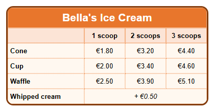

Learning path › Lesson 4
Borders and rounded corners
Goal: choose the border of the table and of the cells: colour, width, style and
rounded corners. This gives your table a style of its own.

Two kinds of borders
- The border around the whole table is set on the
 Table (T) tab: Table border colour,
Table border width, Table border style and Table border radius (the larger the number, the rounder the corners).
Table (T) tab: Table border colour,
Table border width, Table border style and Table border radius (the larger the number, the rounder the corners). - The lines between the cells: choose their thickness with Grid line width (Table tab). Choose the style per cell
with Cell border style on the
 Cell (C) tab:
none, solid, dashed, dotted or double.
Cell (C) tab:
none, solid, dashed, dotted or double.
Good to know: the border around the table and the rounded corners are best seen in the
test browser. Click Click here for extra functions at the bottom and then Open test browser.
Make it yourself
- Make a table of 4 columns and 6 rows. Merge the cells of the top row (see lesson 3) and type the name of the ice cream parlour.
- Fill in the kinds (cone, cup, waffle) and the prices, and format the header as in lesson 2.
- On the Table tab choose dark brown for Table border colour and set Table border width to 3.
- Set Table border radius to 14: the corners of the table become round.
- Select the cells with the kinds and prices (drag over them) and on the Cell tab choose dotted for Cell border style.
- Look at the result in the test browser.
A border that fits
A border helps to read the table, but too many lines make it look busy. Use a thick border around the table and thin or light lines inside. Choose a border colour that matches the colour of the header.
Exercise
Give the table a double border instead of a solid one. Then set Cell corner radius to 6 and see in the test browser what changes.
Solution
On the Table tab choose double for Table border style. A double border needs some width: leave Table border width at 3 or more. With Cell corner radius every cell gets its own round corners, so the cells look like little buttons.
Working on Linux? Then open the example yourself with Open table designer: folder
lessen/en, file les04-prijslijst.htd.